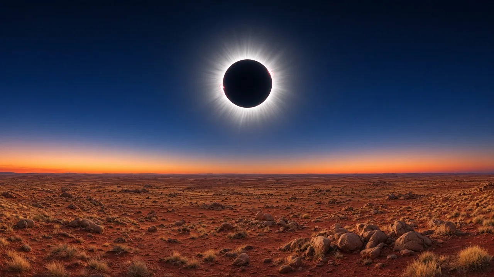
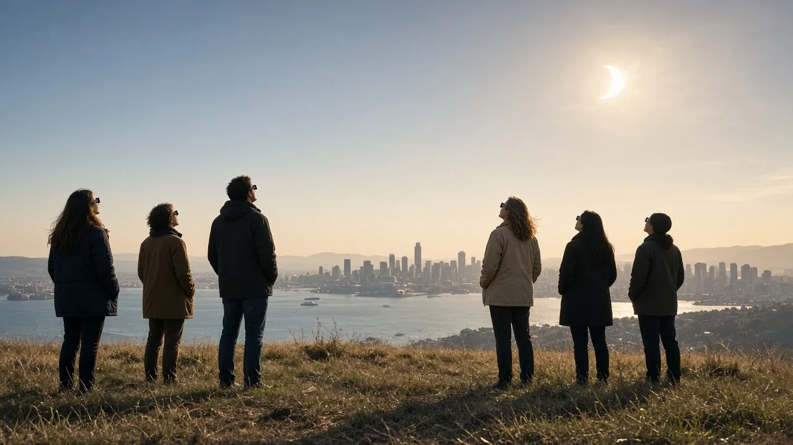

The next total solar eclipse in Australia is on Saturday 22 July 2028. The Moon’s shadow crosses the continent from the Kimberley (WA) through the NT, south-west Queensland and NSW to Sydney (totality about 1:59 pm AEST, 3 m 48 s), then ends over New Zealand’s South Island. Totality lasts up to 5 minutes 10 seconds in the Kimberley.
until totality begins on mainland Australia (Kimberley), 22 July 2028 at 10:49 am AWST

The 2028 total solar eclipse happens on Saturday 22 July 2028. It is the first total eclipse over Sydney since 1857.
The path of totality is about 200 km wide. It reaches land on the Kimberley coast of Western Australia mid-morning, crosses the Northern Territory near Tennant Creek, runs through south-west Queensland and outback New South Wales, and passes over Sydney in the early afternoon. It then crosses the Tasman Sea and ends over Queenstown and Dunedin in New Zealand's South Island, with the Sun low in the late afternoon.
Everyone else in Australia and New Zealand sees a partial eclipse, including Perth, Darwin, Adelaide, Melbourne, Brisbane, Hobart, Auckland and Wellington.
Local start of totality and how long it lasts, west to east. Times are AWST (UTC+8), ACST (UTC+9:30), AEST (UTC+10) and NZST (UTC+12). Tap a place for its full guide.
| Location | Totality begins | Totality | Sun alt. |
|---|---|---|---|
| Mitchell Falls, WA (Kimberley) | 10:49:05 am AWST | 5m 05s | 53° |
| Wyndham, WA | 10:57:33 am AWST | 3m 19–24s | 53° |
| Kununurra, WA | 10:59:32 am AWST | 2m 56s | 53° |
| Tennant Creek, NT | 12:47:53 pm ACST | 3m 21s | 50° |
| Devils Marbles / Stuart Hwy, NT | 12:48:25 pm ACST | 4m 50s | 49° |
| Bedourie, QLD | 1:33:59 pm AEST | 4m 28s | 44° |
| Thargomindah, QLD | 1:45:14 pm AEST | 4m 14s | 38° |
| Bourke, NSW | 1:50:06 pm AEST | 4m 00s | 35° |
| Gilgandra, NSW | 1:55:11 pm AEST | 3m 52s | 32° |
| Sydney, NSW | 1:59:37 pm AEST | 3m 48s | 29° |
| Queenstown, NZ | 4:15:05 pm NZST | 2m 49s | 10° |
| Dunedin, NZ | 4:15:47 pm NZST | 2m 47s | 8° |
In Sydney the partial eclipse starts at 12:40 pm, totality runs 1:59:37–2:03:25 pm AEST and the partial phase ends at 3:14 pm. See the Sydney eclipse guide for viewing spots.
Sources: AAQ (Xavier Jubier data); Eclipse Seconds (NASA/Espenak elements); timeanddate.com; NASA eclipse path. Published sources differ by a few seconds.
For the longest totality and the best weather, go to the Kimberley: dry-season skies and more than 5 minutes of darkness on the centreline.
For a road trip, the Outback from Devils Marbles to Bourke gives 4–5 minutes, a high Sun and generally clearer skies than the coast.
For a city eclipse, Sydney has 3m 48s of totality with easy transport, but higher odds of winter cloud.
For scenery, New Zealand has totality over snowy mountains, with the Sun only about 10° up.
Eclipse glasses for every partial phase. Use ISO 12312-2 certified eclipse glasses or a solar viewer. Sunglasses are never safe. Cameras and binoculars need their own certified solar filters.
Glasses off only during totality. Take them off once the last bright beads of sunlight are gone, and put them back on at the second diamond ring.
Stay mobile. Check cloud forecasts 2–3 days ahead and be ready to drive along the path. 22 July 2028 is a Saturday in school holidays for several states, so book accommodation early.
Plan your photos ahead. Read our guide to photographing totality, and spend at least part of it just looking.

After 22 July 2028, the next total solar eclipses over Australia are:
| Date | Path in Australia |
|---|---|
| 25 Nov 2030 | SA (Eyre Peninsula, Flinders Ranges) → NW NSW → S QLD |
| 13 Jul 2037 | S WA → S NT (Uluru) → QLD incl. Brisbane & Gold Coast → NZ |
| 26 Dec 2038 | Central WA → SA → NSW/Vic border → NZ |
More detail in Next solar eclipse in Australia.
Sources: NASA Eclipse Web Site; AAQ, Five Australian Eclipses.
Click any point on the path map for exact totality times, and vote for where the community gathers.